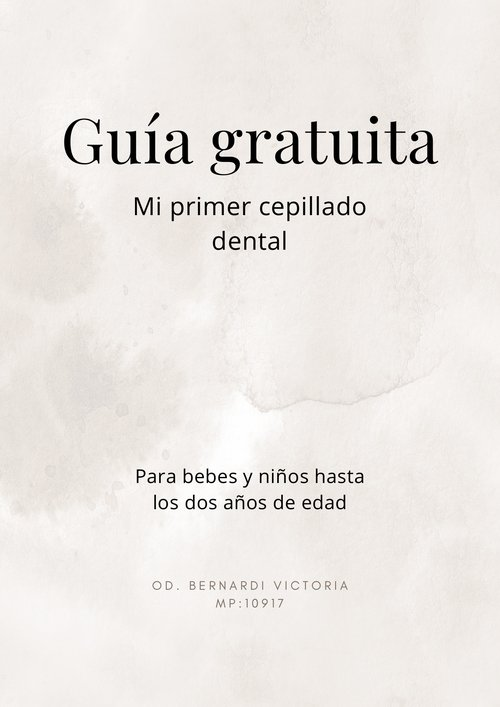

Ebook Digital · 48 páginas
Lo que tenés que saber sobre la salud bucal durante el embarazo y los primeros años de tu bebé
Quiero el ebook — $ ···⏳ Precio especial de lanzamiento · Sube a $ ··· pronto
Si te preguntaste alguna vez si podías ir al dentista embarazada, cuándo llevar a tu bebé por primera vez, o cómo cepillarle los dientes, este ebook es para vos.
Y querés saber qué tratamientos son seguros, cómo cuidar tus encías y qué le pasa a tus dientes durante el embarazo.
Y tenés dudas sobre cuándo empieza la higiene bucal, cómo cepillarle, qué pasa con el chupete o la lactancia.
Para una amiga embarazada o mamá primeriza. Un regalo que se usa de verdad, con información que no encontrás en una búsqueda rápida.
El embarazo y la llegada de un bebé vienen con un montón de preguntas sobre salud bucal. Y las respuestas que encontrás online son contradictorias, incompletas, o directamente están mal.
Cuatro partes que cubren todo el recorrido: desde el embarazo hasta los dos años de tu bebé.
Precio especial de lanzamiento · Acceso inmediato
Soy Victoria Bernardi, odontóloga amante de la prevención y el autocuidado en San Luis, Argentina. En el consultorio me pasa mucho que las mamás llegan con dudas que nadie les resolvió, o con creencias que llevan generaciones y resultan ser mitos.
Este ebook es todo lo que les digo a mis pacientes en la consulta, escrito para que lo tengas siempre a mano.
"Testimonio real próximamente..."
"Testimonio real próximamente..."
"Testimonio real próximamente..."
Descargalas sin costo. Información clara y concreta para que tengas siempre a mano.

Para bebés y niños hasta los dos años. Paso a paso, qué elementos usar y cómo hacerlo bien desde el primer día.
Descargar guía¿Chupete sí o no? Cuándo empezar, cuándo dejarlo, cómo elegirlo y qué errores evitar para que no afecte los dientes.
Descargar guía48 páginas con todo lo que necesitás saber sobre salud bucal en el embarazo y los primeros años de tu bebé.
Precio regular: $ ···
Precio de lanzamiento: $ ···